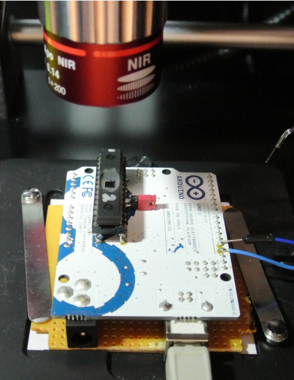
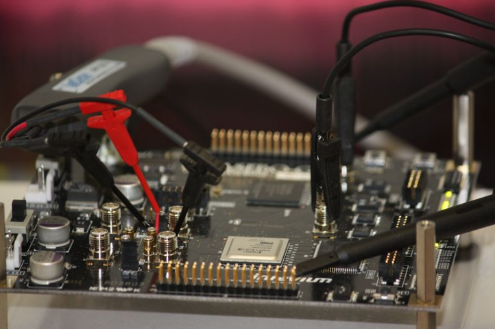
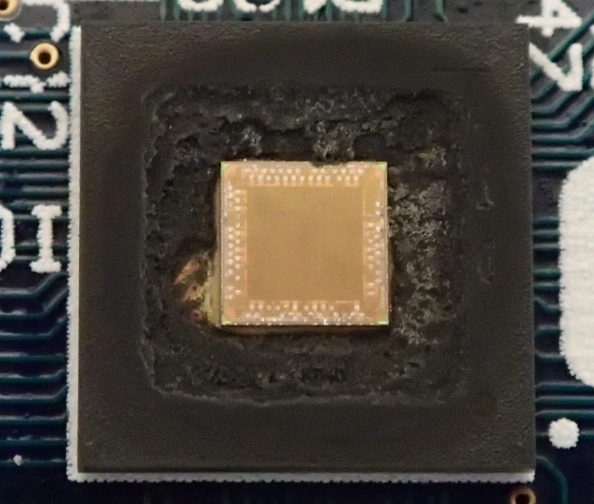
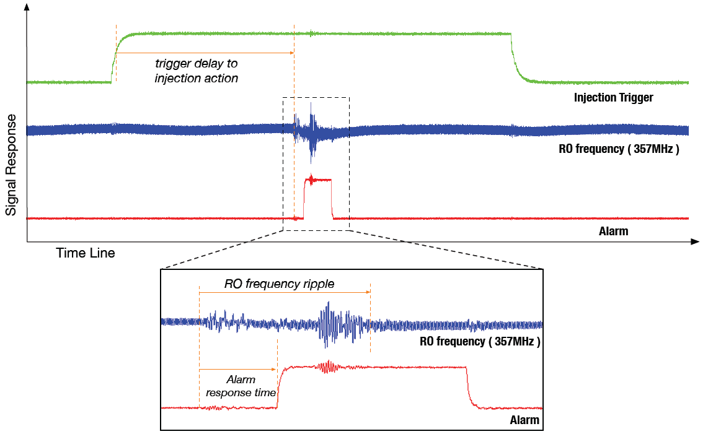

|
欢迎来到张帆的中文主页 计算机科学与技术学院 浙江大学 |
| 我的主页 | 相关新闻 | 发表论著 | 科研活动 | 教学活动 | 奖励荣誉 | 相关信息 | 我的学生 |  |
 |
|
相关链接:
|
故障分析
密码故障分析是一种利用电压毛刺、时钟毛刺、激光干扰等方式迫使密码模块运算产生错误，并通过对错误结果的分析进行密钥恢复的技术。相比功耗分析、电磁分析等其他旁路攻击技术，故障分析的数据复杂度较低，如针对RSA、AES、LED等密码，1次故障注入即可恢复密钥。由于物联网芯片大都基于电子技术进行实现，计算、存储资源受限，软硬件安全防护能力有限，接口也相对比较简单，容易被注入故障。鉴于故障注入的现实可行性和故障分析的高效性，故障攻击目前已成为密码实现安全性的最大威胁。在2011年NIST 发布的《密码模块安全标准第三版FIPS 140-3》中，首次将故障攻击明确提案至―4.6节物理安全部分，要求密码模块在设计、生产、使用中要加强故障攻击防护。
最早的故障分析研究始于航空电子设备抗干扰研究，研究者发现用来保护微处理器的封装材料中微粒物会释放铀-235、铀-238、钍-230，会衰减为铅-206，产生足够大的充电使得芯片上的比特位反转，从而产生故障。后续研究者开始学习和仿真宇宙光对半导体的影响。由于故障在航空电子系统中的影响则是灾难性的，NASA和Boeing组织发起了在复杂环境下的电子设备抗干扰研究。从那时开始，基于激光、电压、时钟、辐射等物理方式来注入故障被大量的发现。直至1996年，Boneh等将故障注入应用到密码分析中，针对密钥芯片的故障注入技术得到了迅猛的发展。根据攻击者侵入密码芯片接口及运行环境的程度，可分为非侵入式、半侵入式、侵入式攻击三种。
（1）非侵入式攻击 非侵入式攻击是一种简单廉价的攻击方式，不需要对密码设备自身进行破坏或修改，通常是通过电压、时钟信号扰乱等实施，隐蔽性好。攻击者可利用的条件有电压、时钟、脉冲、温度等。以时钟为例，攻击者可在密码运行时，利用随机函数发生器产生一个额外的时钟频率，并叠加到密码芯片的内部工作时钟频率上，进而得到一个高于正常的工作频率，使得中间状态产生故障。
（2）半侵入式攻击 半侵入式攻击由Skorobogatov博士提出，需要攻击者物理接触设备，但不破坏设备的钝化层，也可能通过非授权界面进行电气接触。以激光注入为例，攻击者需要利用电动钻头拆包芯片，利用化学药剂进行去模处理，在此基础上利用超声波清洗池对芯片进行清洗，最后利用激光注入器对芯片内部注入故障。
（3）侵入式攻击 侵入式攻击常在半侵入式攻击的基础上，对集成电路芯片进行更深一层的剖片，去除门电路上面的金属层，使得每个门电路都能够裸露出来，再利用激光等手段对准单个门电路做进一步的故障注入。
三种故障注入方式中，半侵入式和侵入式攻击需要对密码芯片进行剖片处理，结合激光等手段进行故障注入，故障注入精度较高，但攻击代价大。非侵入式攻击则是通过时钟、电压或电磁场干扰的方式让目标执行出错，攻击代价小，但故障注入精度较低。
 |  | |
| 针对微控制器的激光故障注入 | 针对FPGA的时钟/电压毛刺故障注入 | |
 |  | |
| 开封装以后裸露出来的加密芯片 | 跳过部分指令的故障功耗显示 |
故障分析方法
- 差分故障分析: Differential fault analysis: DFA 是最早通过引发计算错误来攻击分组密码的技术之一，攻击者需获取对同一明文进行加密的一对密文。其中一个是正确密文，另一个是因计算故障而产生的错误密文。由于这两次加密在故障位置之前的运算都相同，因此这两个密文可以看成输入未知但具有微小差分的约简轮分组密码加密输出。攻击者通过分析故障差分在最后几轮间的传播，可以恢复出最后一轮的相关密钥，在此基础上迭代攻击，直至得到可以恢复主密钥的相关密钥。
- 故障灵敏度分析: Fault sensitivity analysis: FSA 故障灵敏度分析主要通过分析其中故障点对应的时钟扰乱时间长短同密码运行中间状态的数据依赖性，使用基于汉明重的相关性分析方法进行密钥破解。攻击不再关注故障输出，因此可攻破抗传统差分故障分析攻击的密码设备。 2010年，Li等提出故障灵敏度分析攻击，并对采用了掩码方案的密码实现进行了成功的密钥恢复攻击；之后，研究者又对其进行了深入的研究，包括分析方法改进、分析对象扩展。
- 碰撞故障分析: 攻击由Blomer等首次提出，并对AES 进行了应用。故障模型假设攻击者能够将密码中间结果的任意比特强制设定为0。攻击者首先对值为全0 的明文进行加密，并获取相应的参照密文;然后对首次轮密钥加运算输出的任一比特注入故障，即将特定的比特设定为0。如果所得密文与参照密文相同，则相应的密钥比特值为0；否则相应的密钥比特值为1。通过扫描首次密钥加输出的所有比特，可以通过128 次故障注入来恢复完整的128位AES密钥。
- 无效故障分析: Ineffective fault analysis: IFA 攻击者需要找到具有某种属性的明文输入M，使得在加密过程发生故障时，对应的中间状态数据并未受到破坏，从而产生相同的密文。这种方法通过分析并不修改中间结果的故障，即所谓的无效故障，来获取密钥信息，因此被称为无效故障分析。IFA 的另一种特性是攻击者不需要任何错误密文，而只需了解故障注入是否产生效果。因此，IFA 可以用于攻击抗DFA 的经典防御对策。例如，在密码运行时进行计算检测，并在检测到故障时不再输出错误密文。
- 持久性故障分析： Persistetn fault analysis： 故障分持久性是芯片出现故障（数据错误等）的一种内在特征，但近年来没有被特别地注意。课题组把持久性的特征应用于故障攻击，并提出了持久性故障分析的方案。与传统的故障攻击不同，攻击者可以在加密之前的一段时间内来进行故障注入。这放松了其他攻击中所必须满足的时间同步的约束条件。 持久性故障分析（PFA）详细介绍了AES-128上的不同实现，特别是基于双模块冗余（DMR）的故障强化实现，PFA 在打破这些典型实现方面非常有效。为了说明这种攻击在现实中的可行性和实用性，课题组提出的案例使用了 Rowhammer 技术，对共享库 libgcrypt 进行了攻击。实验结果表明，当 PFA 应用于基于冗余加密的 DMR 的 libgcrypt 1.6.3 时，大约 8200 个密文足以提取 AES-128 的主密钥。这项工作提出了一个新的故障攻击方向，并可以扩展到其他场景下以攻击其他分组密码算法。
 |  | |
| 密码故障分析与防护 | 密码旁路分析原理与方法 |
最后一次更新时间:
版权所有©2026: 张帆